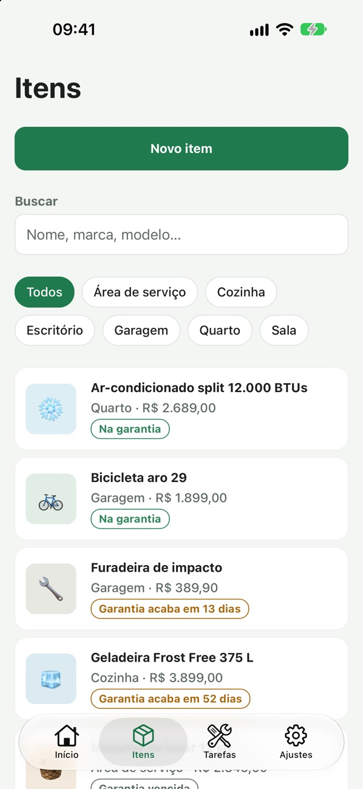

Itens por cômodo
Cada coisa no seu lugar, com foto
Sala, cozinha, quarto, área de serviço, garagem… Cadastre cada bem com foto, marca, modelo, número de série, valor pago em reais, data da compra e loja.
- Busca por nome, marca ou modelo.
- Filtro por cômodo e cômodos do seu jeito.
- Valor total declarado na tela inicial.
